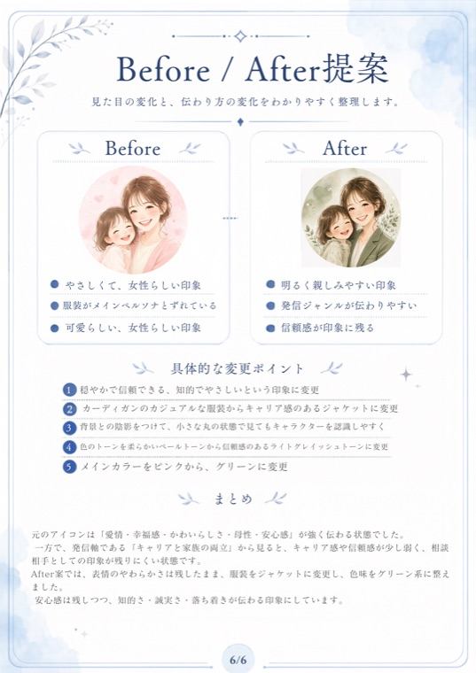
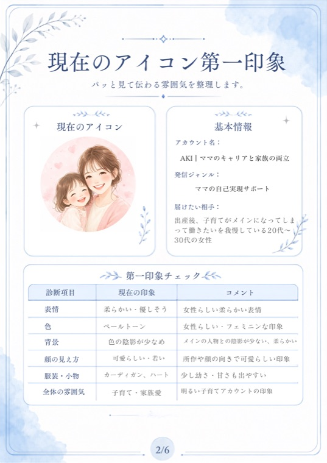
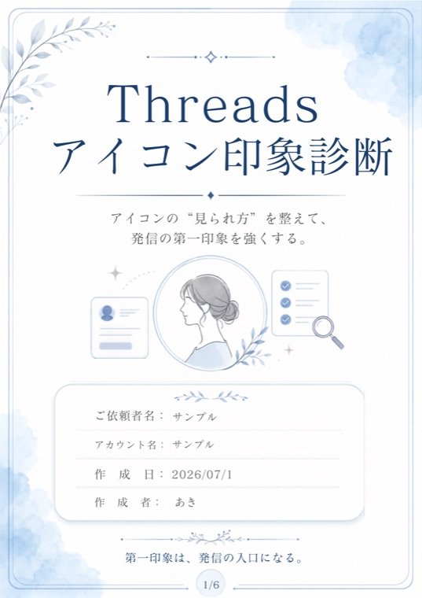

Threadsアイコン印象診断カルテ
今のアイコンが与えている印象を、表情・色・背景・顔の見え方・服装や小物・全体の雰囲気から整理します。
Threads アイコン印象診断
友達は増えるのに、申し込みが来ない。
その理由は、発信の中身ではなく
“入り口”かもしれません。
先着3名・モニター価格 ¥3,980
そして気づけば、集まってくれるのは友達感覚の人ばかり。
お客さまになる人が、来てくれない。
WHY
フォローするかどうかの判断は、じつは数秒で終わっています。
プロフィールを読む前に、記事を開く前に。
判断されているのは、
小さなアイコン1枚です。
どんなに良いことを書いていても、アイコンの印象が「なんとなく素人っぽい」 「発信内容と合っていない」だと、中身を読んでもらう前に離れていってしまいます。
だからアイコンは、ただの画像ではありません。
あなたの発信の“入り口”です。
CONTENTS
今のアイコンが与えている印象を、表情・色・背景・顔の見え方・服装や小物・全体の雰囲気から整理します。
届けたい相手・発信内容・販売したい商品に合わせて、複数のAfter案をご提案します。
今と、整えたあと。何を変えると伝わり方が変わるのかを、並べて整理します。
After案を見ていただいたあと、すり合わせをして最終案を決定します。
After案6パターンと最終案1パターン、あわせて7点の画像データをお渡しします。そのままアイコンに設定していただけます。
SAMPLE



※ サンプルです。実際のカルテは全6ページでお届けします。
STRENGTH
パーソナルカラー検定1級。色が人にどんな印象を与えるかを、Threadsでも日々発信しています。
「なんとなく可愛い」で終わらせません。表情・色・背景・服装・小物と要素を分解して、何がどう伝わっているかを言葉にします。
整えることと、別人になることは違います。大切にされている想いは残したまま、伝わり方だけを整えます。
VOICE
素敵な画像提案と診断書、本当にありがとうございます。色々と納得の内容でした。
比較カルテもめちゃくちゃ分かりやすすぎて…
実は普段のリアルの私も、あきさんに提案してもらったようなヘアスタイルにすることが多いんです。自分的にはかなりしっくりきてます。
ちょうど下半期スタートのタイミングなので、作成していただいたアイコンに生まれ変わっちゃいたいと思います。
モニター1人目・Threadsで発信中の方
PROFILE
イメージコンサルタント
あき
「好き」×「似合う」で、自分らしい魅力をつくる。
色の印象戦略をテーマに、Threadsで発信しています。
写真の中でどう見られるか、信頼感や親しみやすさがどう伝わるか。 そうした視点をもとに、小さなアイコン1枚から印象を整理していきます。
FAQ
はい、どちらでも受けていただけます。お写真の方もイラストの方も対象です。大切なのは「どんな印象で受け取られているか」なので、アイコンの種類は問いません。
むしろ、始めたばかりの今がチャンスです。フォロワーが増えてから変えるより、早い段階で入り口を整えておくほうが、届けたい人に届きやすくなります。
ご購入後、1日以内にヒアリング内容をお送りします。そこから3日以内に、診断カルテとAfter案6パターンをご提案します。そのあとすり合わせを行い、最終案を決定します。
消しません。この診断は「別人になる」ためのものではなく、あなたの魅力を、届けたい相手に伝わる形へ整えるためのものです。大切にされている想いは残したまま進めます。
正直にお伝えすると、アイコンを変えただけで必ず売れるようになる、とはお約束できません。この診断が整えるのは“入り口の質”です。読んでもらう前に離れてしまう、という機会損失を減らすためのものだとお考えください。
診断後に、ご感想のご協力をお願いする場合があります。それ以外に必要な作業はありません。
あきのThreads DMへ、最初のメッセージで「noteのアカウント名」をお送りください。購入の確認が取れ次第、ヒアリング内容をお送りします。ご連絡がないと診断を始められないため、お忘れなくお願いします。
印象は、なりたい自分へ近づくための入り口です。
その最初の一歩を、一緒に整えていきませんか。
モニター価格
¥3,980
先着 3 名
※ モニター募集終了後は、通常価格でのご案内となります
※ ご購入後は、あきの Threads DM へ「noteのアカウント名」をお送りください